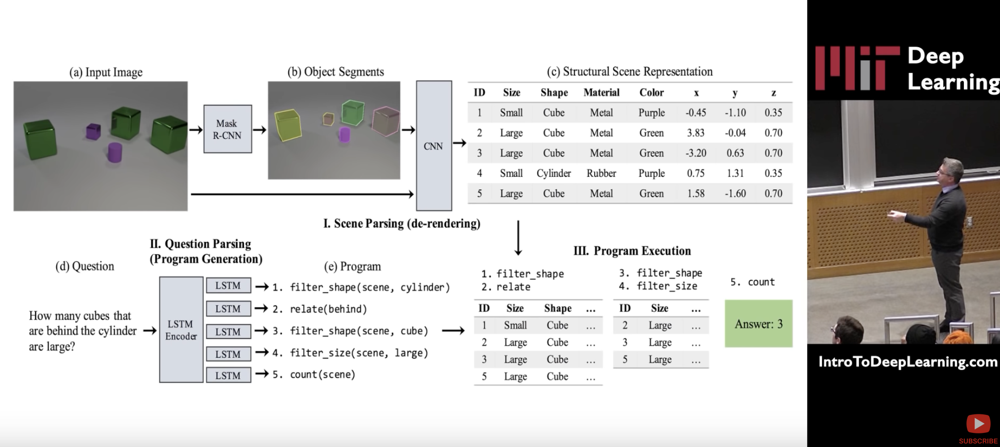
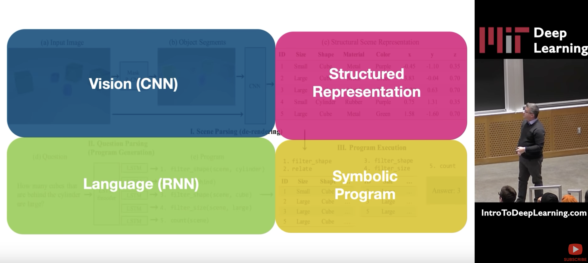

Neuro Symbolic Integration
Table of Contents
(From https://www.youtube.com/watch?v=EVsojlOWnzA at 23:58) Sigma:
- allows declaring lifted variablized predicates
- relate muliple predicates together via variable bindings in Conditions
- supports First order Logic semantics (universal and existential qualifiers)
- Neural Networks can acts a black-box factor node function or even as attention maps for predicate variable bindings,
- Potential for bottom-up knowledge summarization and generalization
- A form of Structure Learning
1. MIT 6.S191 (2020) Neurosymbolic AI
A lecture by David Cox https://www.youtube.com/watch?v=4PuuziOgSU4
- learns Structured Representation
- combines deep learning and RL
- uses RL to pass gradients to the deep learning part through the symbolic part
Paper: https://arxiv.org/abs/1810.02338

Figure 1: Neurosymbolic AI

Figure 2: Neurosymbolic AI